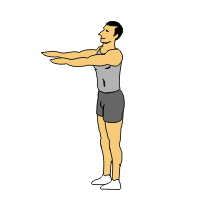
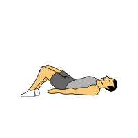

🔰 Apprenti — The Three
Objectif : 3 minutes d'effort par exercice + 3 km de course.
Pompes — 3 min

Répétitions maximales. Corps gainé, poitrine proche du sol à chaque descente.
Squats — 3 min
Pieds largeur d'épaules. Descendre sous la parallèle si possible. Talons au sol.
Sit-ups — 3 min
Épaules au sol en bas, buste redressé en haut. Mains touchent les genoux.
🏃♂️ Course — 3 km
Valide ta course en exportant un fichier GPX depuis Strava/Garmin et en l’important lors de la soumission.
Barème niveaux 1→13 (exemple pompe)
- Niveau 1: 10 pompes
- Niveau 2: 20 pompes
- Niveau 3: 30 pompes
- Niveau 4: 40 pompes
- Niveau 5: 50 pompes
- Niveau 6: 60 pompes
- Niveau 7: 70 pompes
- Niveau 8: 80 pompes
- Niveau 9: 90 pompes
- Niveau 10: 100 pompes
- Niveau 11: 110 pompes
- Niveau 12: 120 pompes
- Niveau 13: 130 pompes